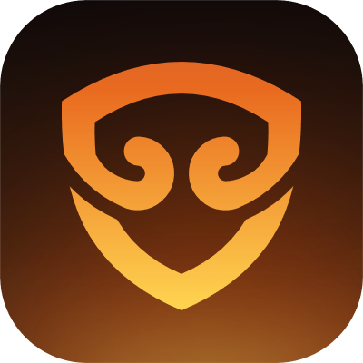

此电脑
回收站
Windows
搜索 Windows
主页
图库
此电脑
收藏夹
下载
文档
名称修改日期类型大小
Fonts
2025/11/8 9:14
文件夹
System
2025/11/8 9:14
文件夹
System32
2025/11/8 9:14
文件夹
SysWOW64
2025/11/8 9:14
文件夹
Temp
2026/9/21 18:02
文件夹
Web
2025/11/8 9:14
文件夹
WinSxS
2026/9/10 22:41
文件夹
7 个项目显示全部结果
64 位系统，也叫 System32
系统核心文件 · 千万不能动
WinSxS 属性
常规安全以前的版本自定义
WinSxS
文件类型:文件夹
位置:C:\Windows
大小:0.00 GB12,016,177,282 字节不能手动删
属性:只读隐藏
确定取消应用(A)
组件仓库系统的「备用零件库」
Windows 更新要用它
出问题修复，也靠它
本地磁盘 (C:) 的磁盘清理
你可以使用「磁盘清理」来释放 本地磁盘 (C:) 上的空间。
要删除的文件:
要删除的文件:
Windows 更新清理11.19 GB
临时文件863 MB
缩略图47.5 MB
回收站0 字节
传递优化文件522 MB
可释放的磁盘空间总量:12.1 GB
确定取消清理系统文件(S)
正规入口 ✓专门清理系统组件
12:30
2026/9/22
2026/9/22
别硬删，走磁盘清理！


章 2 · 显眼的文件夹 — 16
界面为演示还原 · Windows 11 磁盘清理